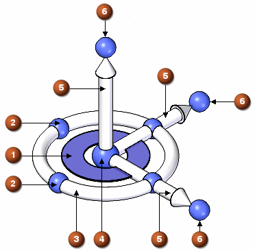

Steering wheel function table
The following illustration and table show how to interact with the 3D steering wheel. You can use the left mouse button actions to manipulate selected elements with the steering wheel or to reposition the steering wheel.

When you click the torus (3) to rotate a selection, you can:
-
Snap to 90-degree intervals,

-
Or press the Shift key while dragging the face or edge to rotate in 15-degree intervals:

|
Action |
Tool Plane (1) |
Secondary Bearing (2) |
Torus (3) |
Origin (4) |
Axis (5) |
Axis Knob (6) |
|
+drag |
Move selection in tool plane. |
Revolve selection around the normal axis. |
Revolve selection around the normal axis. Use Shift+drag to rotate in 15-degree increments. |
Relocate steering wheel origin. |
Move selection along axis. |
Changes axis direction to point towards a selected keypoint. |
|
Move selection in tool plane. |
Changes the axes on the tool plane while keeping the normal axis fixed. |
Revolve selection around the normal axis. |
Relocate steering wheel origin. |
Move selection along axis. |
Changes axis direction to point towards a selected keypoint. | |
|
+Shift + |
Reorient steering wheel by flipping direction of axes. |
Changes the axes on the tool plane while keeping the normal axis fixed. |
Reposition steering wheel by rotating the axes in the plane of the torus. |
Reposition origin by keeping the orientation of steering wheel constant. |
Reposition steering wheel along a single axis. |
Reposition steering wheel by rotating about the axis that highlights. |
|
+Shift+drag |
None. |
Reposition steering wheel by rotating the axes in the plane of the torus. |
Reposition steering wheel by rotating the axes in the plane of the torus. |
Reposition origin by keeping the orientation of steering wheel constant. |
Reposition steering wheel along a single axis. |
Reposition steering wheel by rotating about the axis that highlights. |
|
+Ctrl+drag |
Moves a copy of the select set in the tool plane. |
Revolves a copy of the selection around the normal axis. |
Revolves a copy of the selection around the normal axis. |
Relocate steering wheel origin. |
Moves a copy of the select set along the axis. |
Reposition steering wheel by rotating about the axis that highlights. |
|
+Ctrl+ |
Moves a copy of the select set in the tool plane. |
Changes the axes on the tool plane while keeping the normal axis fixed. |
Revolves a copy of the selection around the normal axis. |
Relocate steering wheel origin. |
Moves a copy of the select set along the axis. |
Reposition steering wheel by rotating about the axis that highlights. |